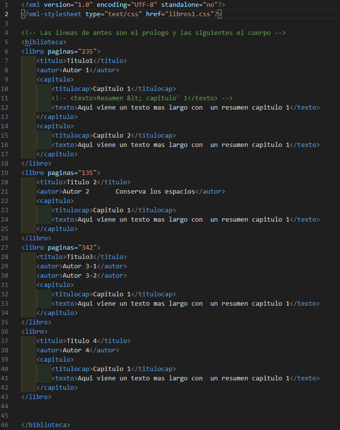

Objetivo general
Conocer las característaicas y uso de XML
Entender el concepto de validación
Aprender la validación DTD
Descripción general
Es un lenguaje de marcado de propósito general definido por el W3C
El propósito principal del lenguaje es compartir datos a través de diferentes sistemas, como
Internet.
- Similar a HTML.
- No está predefinido. Las etiquetas se definen
XHTML
- Se trata de un estándar desarrollado por W3C. Es aplicar XML a HTML
- Versión más estricta y modular de HTML. Lo que significa que las etiquetas deben cerrarse correctamente y los documentos deben estar bien formados.
- Sigue las reglas de XML para definir la estructura y el contenido de las páginas web.
- Compatible con HTML
- Compatible con CSS
- El mismo uso que HTML
- Su extensión es .xhtml
Características de XML
- Lenguaje de estructura libre. No está predefinido. Las etiquetas se definen.
- Consta de dos partes.
- Prólogo
- Cuerpo
- Usa espacios de nombres para evitar ambigüedades
- Su sintaxis es como la de HTML.
- Utiliza esquemas en forma de árbol con una única raíz
- Los documentos se validan.
NEGACIÓN
No es un sustituto de HTML (ni lo pretende), No es un gestor de base de datos, No es un estándar de comunicación, No es un lenguaje de programación
Estructura de un documento XML
- Prólogo
- Declaración XML
- Información del documento
- Hojas de estilo XSLT
- Hojas de estilo CSS
- Validacion DTD (interna o externa)
- Cuerpo
- Raíz. Árbol de contenido.
- Espacio de nombres
- Validación XSD
- Elementos XML
- Raíz. Árbol de contenido.

El elmento XML
Es la unidad fundamental, etiqueta de apertura de apertura y cierre, atributo y valor, contenido.
El elmento vacío <elmento/>
Validación de un documento XML
Detecta errores en etiquetas, jerarquía o contenido, Asegura que el XML pueda ser procesado por programas sin problemas.
- Tipos de validación
- DTD- Define qué elementos y atributos pueden existir
- XSD- Define tipos de datos, estructura y restricciones más precisas
Espacio de nombre y Parse
Espacio de nombres en XML
- Es un identificador único que se asigna a los elementos y atributos de un XML.
Evita conflictos de nombres cuando se combinan elementos de diferentes fuentes.
- Se declara con xmlns en el elemento raíz :
<biblioteca xmlns="http://www.ejemplo.org/biblioteca">
- Puede usar un prefijo si se necesita distinguir varios namespaces:
xmlns:xsi="http://www.w3.org/2001/XMLSchema-instance"
- No tiene que ser una URL real, solo debe ser único y consistente.
Parser en XML
Es la aplicación que lee un XML y lo convierte en una estructura que la computadora pueda usar.
Nos permite detectar errores y trabajar con los datos del XML.